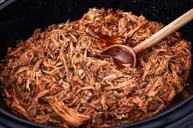

Description

Pulled pork
A rustic dish originating in the American south. This slow cooked meat is
packed full of flavour and guaranteed to please at any barbecue.
Ingredients
- Pork shoulder joint (bone out)
- Paprika
- Black pepper
- Sea salt
- Chilli powder
- Garlic powder
- Onion powder
- Brown sugar
Steps
- Combine all of the spices & brown sugar in a bowl
- Rub the spice blend into every part of the pork shoulder, don't be afraid to get physical
- Place pork joint in a slow cooker - or better yet a smoker - and let cook for a minimu of 8 hours
- Let stand and serve